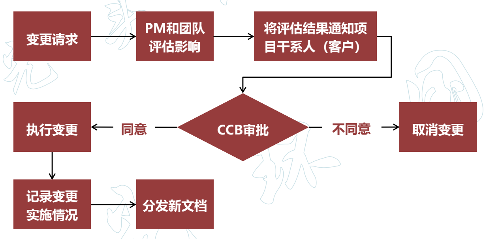

变更请求
✓ 是关于修改任何文档、可交付成果或基准的正式提议
✓ 可能包括：
- 纠正措施。为使项目工作绩效重新与项目管理计划一致而进行的有目的的活动
- 预防措施。为确保项目工作的未来绩效符合项目管理计划而进行的有目的的活动。
- 缺陷补救。为了修正不一致的产品或产品组件而进行的有目的的活动
- 更新。对正式受控的项目文件或计划等进行的变更，以反映修改或增加的意见或内容

变更管理
变更的常见原因
✓ 产品范围（成果）定义的过失或者疏忽
✓ 项目范围（工作）定义的过失或者疏忽
✓ 增值变更
✓ 应对风险的紧急计划或回避计划
✓ 项目执行过程与基准要求不一致带来的被动调整
✓ 外部事件
变更分类
✓ 根据变更性质可分为：重大变更、重要变更和一般变更。通过不同审批权限控制 一般的变更可能项目经理批准就足够了，重大变更就需要 CCB 整体评估
✓ 根据变更的迫切性可分为：紧急变更、非紧急变更。通过不同变更处理流程进行
变更管理原则
- 基准管理 只要涉及到「基准」变化，一定要走正是的变更流程
- 变更控制流程化
- 明确组织分工
- 评估变更的可能影响
- 妥善保存变更产生的相关文档，确保其完整、及时、准确、清晰
变更管理组织结构
✓ CCB（项目控制委员会或配置控制委员会）, 负责裁定接受哪些变更。是决策机构，不是作业机构。通常工作是通过评审手段来决定项目基准是否能变更，不提出变更方案
✓ 项目经理，响应变更提出者的需求，评估变更对项目的影响及应对方案，将需求由技术要求转化为资源需求，供授权人决策；并据评审结果实施和调整基准
小项目变更
✓ 项目规模小，与其他项目的关联度小时，变更的提出与处理过程可在操作上力求简便、高效
✓ 小项目变更仍应注意以下几点：
- 对变更产生的因素施加影响：防止不必要的变更，减少无谓的评估，提高必要变更的通过效率
- 对变更的确认应当正式化
- 变更的操作过程应当规范化
对进度变更的控制
- 判断项目进度的当前状态
- 对造成进度变化的因素施加影响
- 查明进度是否已经改变
- 在实际变化出现时对其进行管理
对成本变更的控制
- 对造成费用基准变更的因素施加影响
- 确保变更请求获得同意
- 当变更发生时，管理这些实际的变更
- 保证潜在的费用超支不超过授权的项目阶段资金和总体资金
- 监督费用绩效，找出与费用基准的偏差
- 准确记录所有的与费用基准的偏差
- 防止错误的、不恰当的或未批准的变更被纳入费用或资源使用报告中
- 就审定的变更，通知利害关系者
- 采取措施，将预期的费用超支控制在可接受的范围内